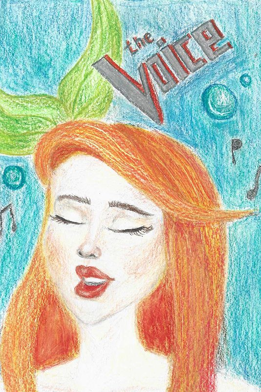
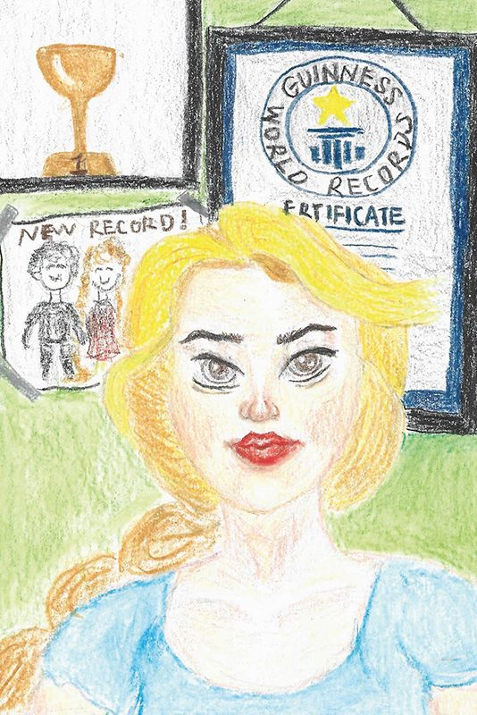
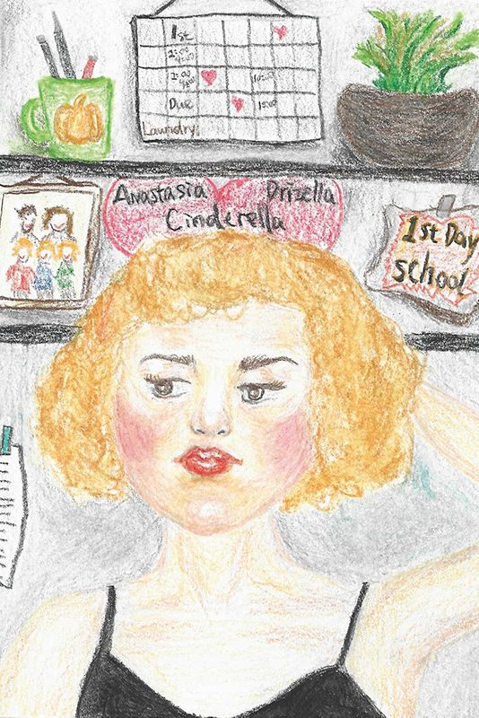
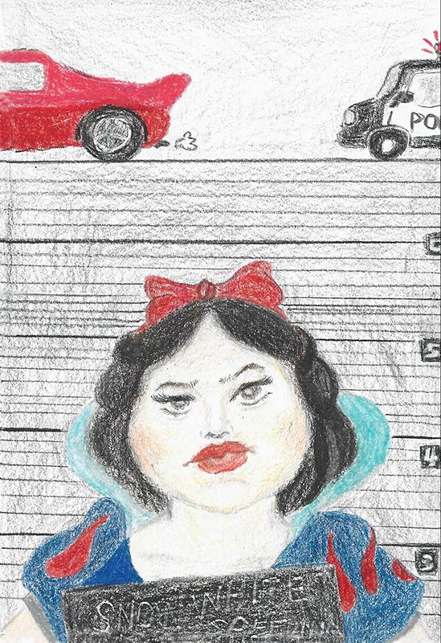
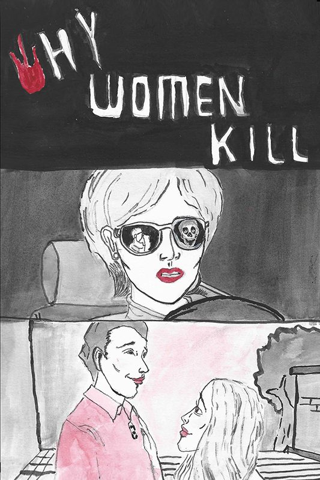
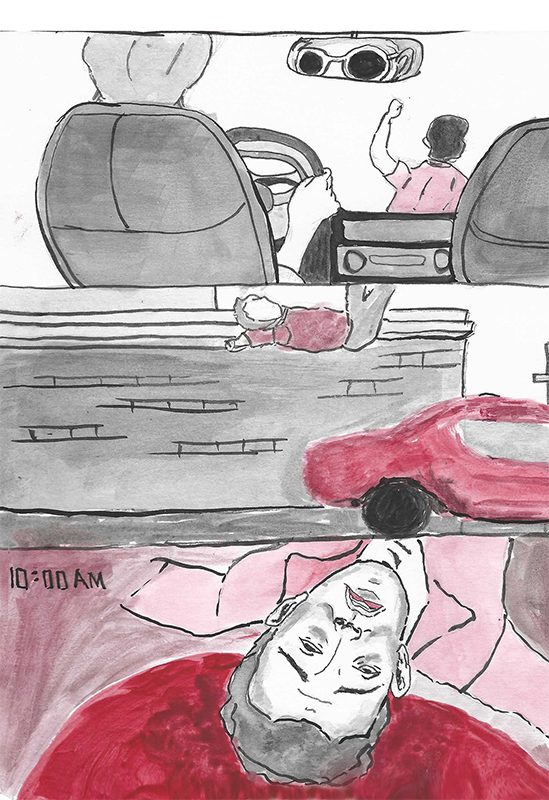
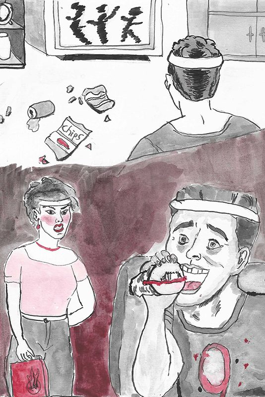
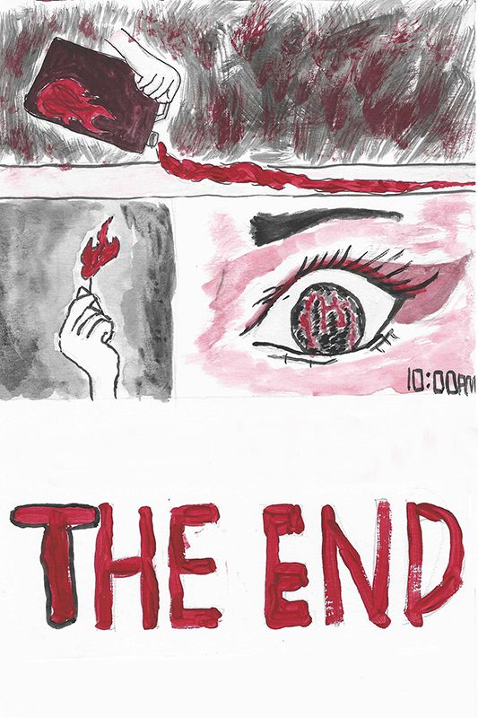

HAND DRAWING
<
"Morden Princess": Mermaid & The Voice of The World

"Morden Princess": Rapunzel & World Guinness Record
For this project: what I want to do is "rewrite" the stories for all the princesses. Why do they need help from others? Why do all the stories have bad characters? I just want things to be good, like no evil. It sounds very childish, but I will make it happen in my illustrations.
1: Little Mermaid, No more sacrifices her life for a man. No more sacrificing her talented and beautiful voice. Let her go where she wants to go. Let the world hear her voice. Let her make herself proud.
2: Rapunzel was like a prisoner in a big tower for over 15 years. She has no life, no friends, all she has is just her long hair. So what not let her hold a World Guinness Records, she can get interviews on TV, and a lovely boy who supports her career. She is going to be a life winner.
The same concepts for the other two.
3: Cinderella, No more unfriendly stepsisters or steps mothers. This is just her first day of college. She is a normal girl who has a big and lovely family.
4: Snow White has a bad stepmother, who is mean and wants to kill her. She had to live in the forest and got poisoned. She was saved by a prince in the end. No offense, what kind of princes will kiss a dead body? I feel like she needs a different life, so why not let her drive a fancy car on the highway. She got pulled over by a police officer, probably she drove too fast. So what? (of course, do not drive too fast in real life, this is just an illustration after all) She deserves free and wildlife. She does not need a man to kiss her to save her. She can be her lifesaver.

"Morden Princess": Cinderella & First day College

"Morden Princess": Snow White & Car Racing

"Why Women Kill": 10:00 AM

"Why Women Kill": 10:00 AM
This is a projcet that I got inspired by a TV Show named "Why Women Kill".
Why Women Kill is an American dark comedy-drama anthology television series created by Marc Cherry for CBS All Access. Set in multiple time periods, the series depicts the events leading to a death that occurs after the respective husbands of three married women commit adultery.
My project is to draw a day of life.
The "10AM" section is in a daytime, wife found out that the husband is cheating on her, she got very upset and mad. She decided to kill the husband for revange.
The "10PM" section is in a night time, the wife is mad at husband leave all the housework to her. He just watching TV whole day, and he did not appreciate what she did for the family.
The TV Show actually is more interesting than my illustration. I highly recommend this show to all of you.

"Why Women Kill": 10:00 PM

"Why Women Kill": 10:00 PM